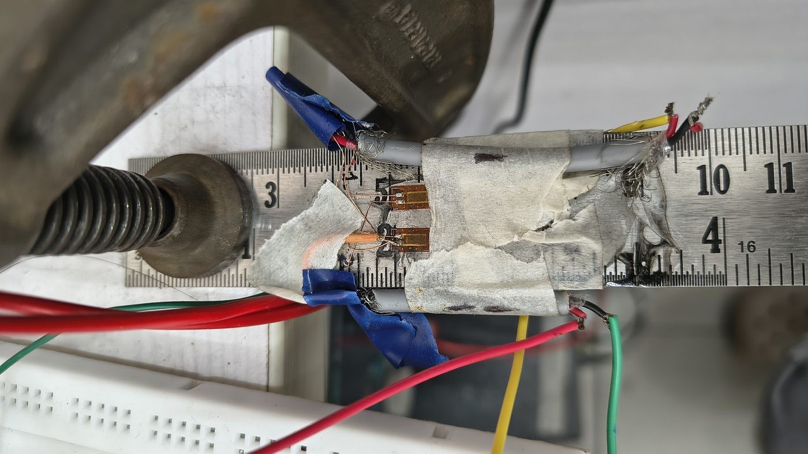
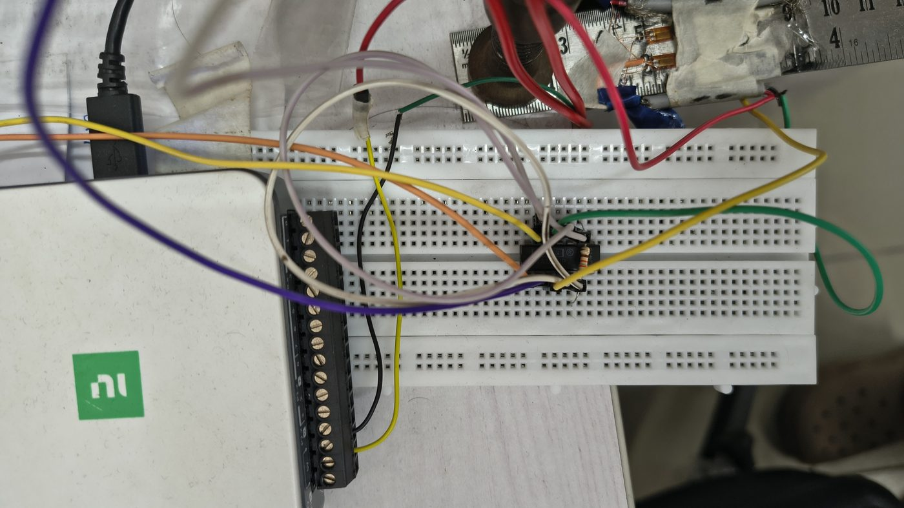
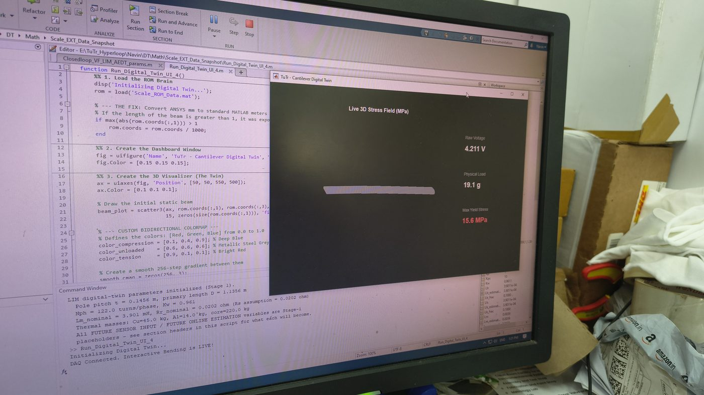
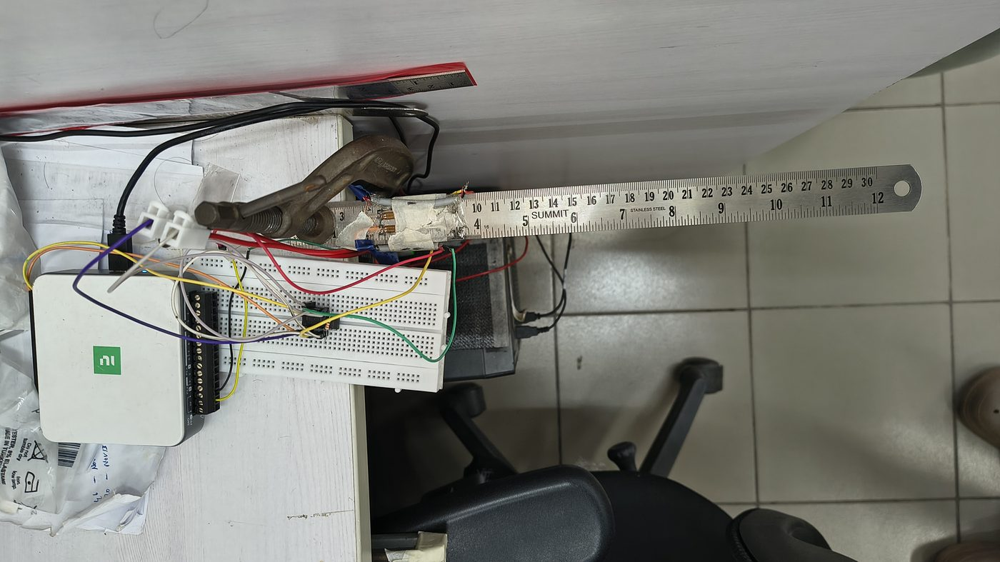
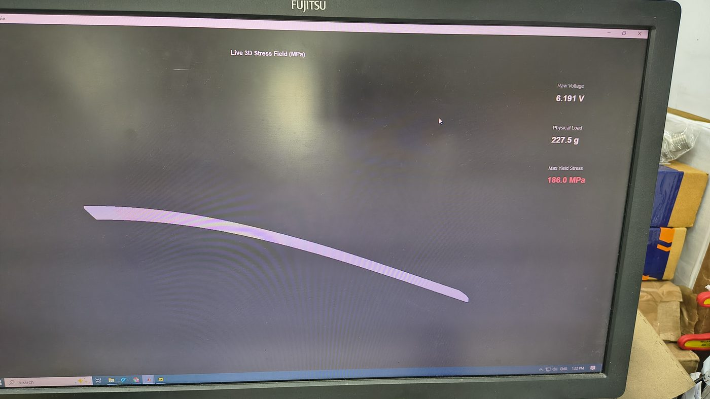

Back to Projects
Structural Digital Twin
Real-time structural monitoring proof-of-concept — synchronizing a physical cantilever scale with its FEA-based virtual counterpart at ~100 ms update latency.
Real-time structural monitoring proof-of-concept — synchronizing a physical cantilever scale with its FEA-based virtual counterpart at ~100 ms update latency.
I led a two-member team to develop Tutr Hyperloop's first Structural Digital Twin proof-of-concept — establishing the organization's foundational Digital Engineering capability.
The objective was to demonstrate live structural monitoring by acquiring strain data from a physical structure, processing it through signal conditioning and DAQ hardware, and updating a 3D FEA-based virtual model in MATLAB App Designer with minimal latency.
This proof-of-concept became the template for Tutr's broader Digital Twin initiative, directly informing the ₹30 Crore Digital Twin proposal to Indian Railways and the ongoing LIM Digital Twin development.

The physical system was a 300 mm steel cantilever scale instrumented with a full-bridge strain gauge configuration — chosen over quarter-bridge and half-bridge setups for superior measurement stability, temperature compensation, and sensitivity.
Strain gauge bonding followed strict surface preparation protocols: degreasing, abrasion, neutralization, and adhesive curing under controlled pressure to ensure reliable long-term adhesion and electrical continuity.
An INA101 instrumentation amplifier was used for accurate low-level signal conditioning, providing high common-mode rejection ratio (CMRR) and stable gain before digitization. The conditioned signal was routed through breadboard-based signal conditioning circuitry for filtering and level-shifting prior to DAQ acquisition.


The complete signal chain was designed for minimal noise and maximum measurement fidelity:
The entire analog front-end was shielded and grounded to minimize electromagnetic interference, critical for resolving the microvolt-level signals from the strain gauges.
I developed the MATLAB App Designer dashboard to provide a comprehensive real-time view of the structural state:
The 3D stress field was computed using a reduced-order model derived from ANSYS Mechanical FEA — pre-computing the stress distribution for unit loads, then superposing in real-time based on the measured strain. This approach achieved the ~100 ms update rate while maintaining FEA-level accuracy.



I validated the Digital Twin through progressive loading of the instrumented cantilever scale:
The real-time stress field visualization accurately tracked load changes with sub-second latency, and estimated peak stress values correlated within acceptable engineering tolerance against both analytical and FEA benchmarks.
This three-way validation — physical measurement, analytical theory, and numerical simulation — provided the confidence needed to propose scaling the approach to industrial systems.
This proof-of-concept established Tutr's first Structural Digital Twin capability, creating a reusable architecture that integrates physical sensing, data acquisition, and virtual simulation into a single real-time engineering workflow.
The framework directly informed the Battery Digital Twin PoC (Raspberry Pi + INA226 I²C + Simulink for live SOC/SOH estimation) and the ongoing LIM Digital Twin for Hyperloop pod predictive maintenance — demonstrating the scalability of the approach across different physical domains.